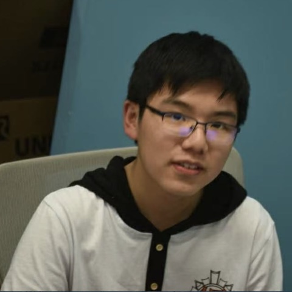

Jianing Ye叶珈宁
I am a Ph.D. student in the Department of Computer Science & Engineering at Washington University in St. Louis, advised by Prof. Chongjie Zhang.
I received my B.S. in Computer Science from Turing Class, Peking University, and my M.S. from the Institute for Interdisciplinary Information Sciences (IIIS), Tsinghua University. My research focuses on reinforcement learning, multi-agent coordination, and robotics.

Publications * equal contribution
- 2026
-
2026
MATCHA: Bridging the Gap between Sample and Wall-Clock Efficiency in Model-Based Multi-Agent Reinforcement Learning Under review
- 2026
- 2025
- 2024
- 2024
- 2023
- 2022
- 2021
- 2021